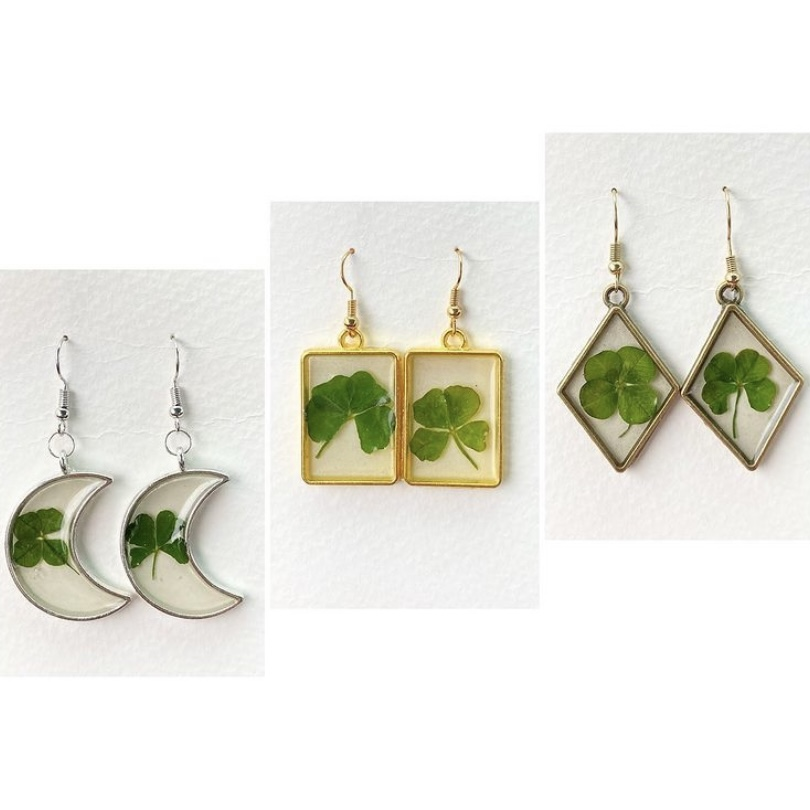

About FairyFindings
I make jewelry out of natural items a fairy would find on a frolic in the forest. This includes rocks, crystals, flowers, leaves, and anything shiny! I have also received many donations of shells, bones, and even human teeth! The most beautiful pieces are made from the natural items the earth provides!
I take pride in building my jewelry from the ground up. Absolutely everything begins with nothing, and ends with something. I even make my chains for my necklaces! I start with a spool of chain, and add some jump hoops and lobster clasps. With my crystal earrings, I start with a spool of wire, add some crystals, then use my tools to create a design, then add jump hoops and an earring piece! Everything I make is built from spools of wire, chain, or beads. The clay mushrooms and earrings are handcrafted, the candles are made in a pot over the stove!
